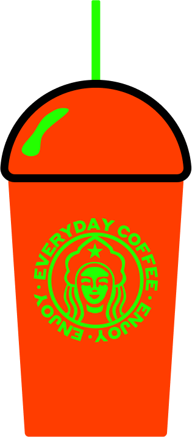

носители 2.0




Styrene можно считать прекрасным примером эксперимента с пропорциями знаков и простотой в шрифтовом дизайне.
Название шрифта (в переводе Стирол) стало отражением непосредственно графики и того синтетического ощущения, которое возникает от контуров и геометрии шрифта.
F J R T
f j r t
Styrene уникален своими пропорциями: обычно узкие в шрифтах знаки f j r и t в Styrene намеренно широки и «приквадрачены», что добавляет в тексты ощущение открытости в неожиданных местах.
Начало этому шрифту положил исторический прототип — шрифт Breede Schreeflooze, опубликованный в начале 20-го века голландской типографией Enschedé Typefoundry.